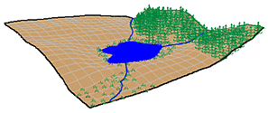
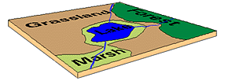
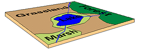

Chapter 4 The Basics of Geographic Information
Geographic data, geospatial data or geographic inforamtion is data that identifies the location of features on Earth. There are two main types of data which are used in GIS applications to represent the real world. Vectors that are composed of points, lines and polygons and rasters that are grids of cells with individual values.
Real world
 Raster
Vector
Raster
Vector
In the above example the features in the real world (e.g. lake, forest, marsh and grassland) have been represented by points, lines and polygons (vector) or discrete grid cells (raster) of a certain size (e.g. 1 x 1m) specifying land cover type.
4.1 Important GIS data formats
There are a number of commonly used geographic data formats that store vector and raster data that you will come across during this course and it’s important to understand what they are, how they represent data and how you can use them.
4.1.1 Shapefiles
Perhaps the most commonly used GIS data format is the shapefile. Shapefiles were developed by ESRI (http://www.esri.com/) – one of the first and now certainly the largest commercial GIS company in the world. Despite being developed by a commercial company, they are mostly an open format and can be used (read and written) by a host of GIS Software applications.
A shapefile is actually a collection of files – at least three of which are needed for the shapefile to be displayed by GIS software. They are:
.shp- the file which contains the feature geometry.shx- an index file which stores the position of the feature IDs in the.shpfile.dbf- the file that stores all of the attribute information associated with the coordinates – this might be the name of the shape or some other information associated with the feature.prj- the file which contains all of the coordinate system information (the location of the shape on Earth’s surface). Data can be displayed without a projection, but the.prjfile allows software to display the data correctly where data with different projections might be being used
4.1.2 GeoJSON
GeoJSON (Geospatial Data Interchange format for JavaScript Object Notation, http://geojson.org/) is becoming an increasingly popular spatial data format, particularly for web-based mapping as it is based on JavaScript Object Notation. Unlike a shapefile in a GeoJSON, the attributes, boundaries and projection information are all contained in the same file.
4.1.3 Shapefile and GeoJSON
We’re now going to explore a shapefile (.shp ) and GeoJSON (.geojson) in action.
Go to: http://geojson.io/#map=16/51.5247/-0.1339

- Using the drawing tools to the right of the map window, create 3 objects: a point, line and a polygon as I have done above. Click on your polygon and colour it red and colour your point green
- Using the ‘Save’ option at the top of the map, save two copies of your new data – one in
.geojsonformat and one in.shpformat - Open your two newly saved files in a text editor such as notepad or notepad++. For the shapefile you might have to unzip the folder then open each file individually. What do you notice about the similarities or differences between the two ways that the data are encoded?
4.1.4 Raster data
Most raster data is now provided in GeoTIFF (.tiff) format, which stands for Geostarionary Earth Orbit Tagged Image File. The GeoTIFF data format was created by NASA and is a standard public domain format. All necesary inforamtion to establish the location of the data on Earth’s surface is embedded into the image. This includes: map projection, coordinate system, ellipsoid and datum type.
4.1.5 Other data formats
Aforementioned data types and formats are likely to be the ones you predominately encounter. However there are several more used within spatial analysis. Theres include:
Vector
- GML (Geography Markup Language – gave birth to KML) - http://www.opengeospatial.org/standards/gml
Raster
- Band SeQuential (BSQ) - technically a method for encoding data but commonly refered to as BSQ.
- Hierarchical Data Format (HDF)
- Arc Grid
There are normally valid reasons for storing data in one of these other formats. For example, BSQ are raster data with a seperate text header file (.hdr) providing geographic spatial reference information. Earth observation data often monitors the electromagenitc spectrum in bands. Humans see in the visible range of the spectrum and our vision is composed of red, green and blue wavelengths. If we wanted to analyse just the red wavelength the BSQ format would let us read in only that data. In comaprsion a GeoTIFF might come with all the data ‘packaged’ in one file and when doing analysis over thousands of images would significantly slow things down. That said you can now often find GeoTIFFs seperated in a similar format to BSQ and it’s fairly straightforward to convert between raster formats.
4.1.6 Geodatabase
A geodatabase is a collection of geographic data held within a database. Geodatabases were developed by ESRI to overcome some of the limitations of shapefiles. They come in two main types: Personal (upto 1 TB) and File (limited to 250 - 500 MB), with Personal Geodatabases storing everything in a Microsoft Access database (.mdb) file and File Geodatabases offering more flexibility, storing everything as a series of folders in a file system. In the example below we can see that the FCC_Geodatabase (left hand pane) holds multiple points, lines, polygons, tables and raster layers in the contents tab.

4.1.7 GeoPackage

A GeoPackage is an open, standards-based, platform-independent, portable, self-describing, compact format for transferring geospatial data. It stores spatial data layers (vector and raster) as a single file, and is based upon an SQLite database, a widely used relational database management system, permitting code based, reproducible and transparent workflows. As it stores data in a single file it is very easy to share, copy or move.
4.1.8 SpatiaLite

SpatialLite is an open-source library that extends SQLite core. Support is fairly limited and most software that supports SpatiaLite also supports GeoPackage, as they both build upon SQLite. It doesn’t have any clear advantage over GeoPackage, however it is unable to support raster data.
4.1.9 PostGIS

PostGIS is an opensource database extender for PostrgeSQL. Essentially PostgreSQL is a database and PostGIS is an add on which permits spatial functions. The advantages of using PostGIS over a GeoPackage are that it allows users to access the data at the same time, can handle large data more efficiently and reduces processing time. In this example (https://medium.com/@GispoLearning/learn-spatial-sql-and-master-geopackage-with-qgis-3-16b1e17f0291) calcualting the number of bars per neighbourhood in Leon, Mexico the processing time reduced from 1.443 seconds (SQLite) to 0.08 seconds in PostGIS. However, data stored in PostGIS is much harder to share, move or copy.
4.1.10 What will I use
The variety of data formats can see a bit overwhelming. But don’t worry, most of the time you’ll be using shapefiles, GeoPackages or raster data.